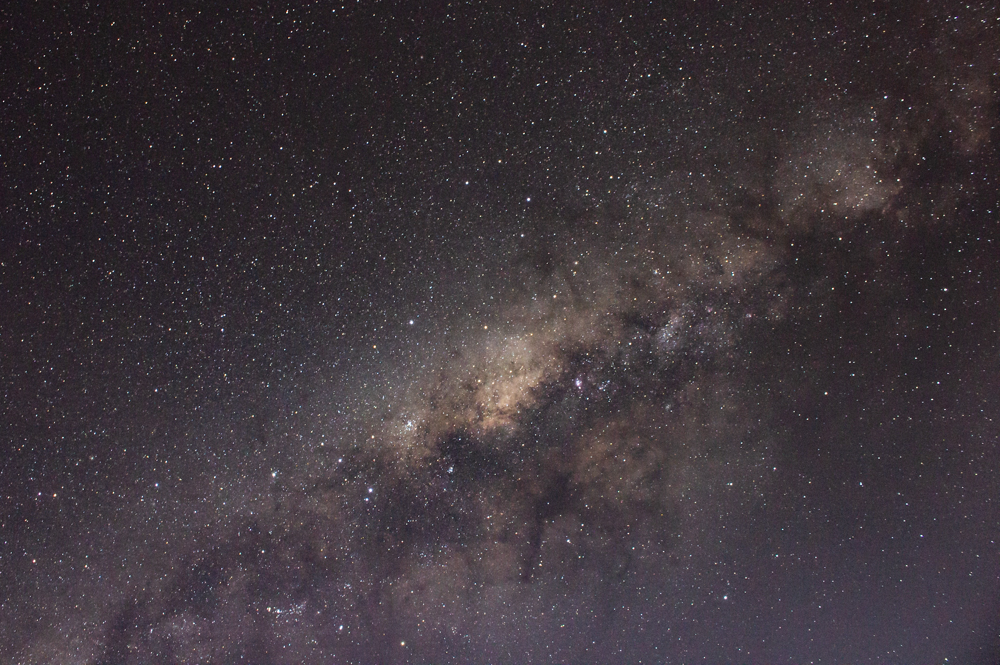
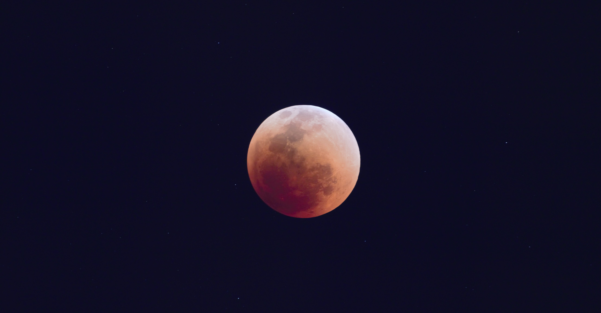
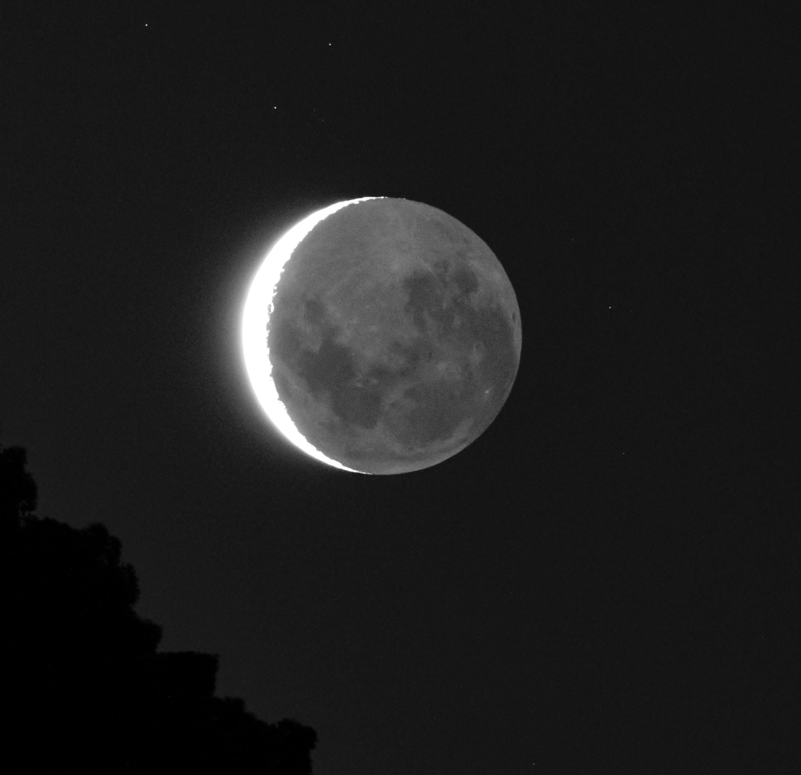
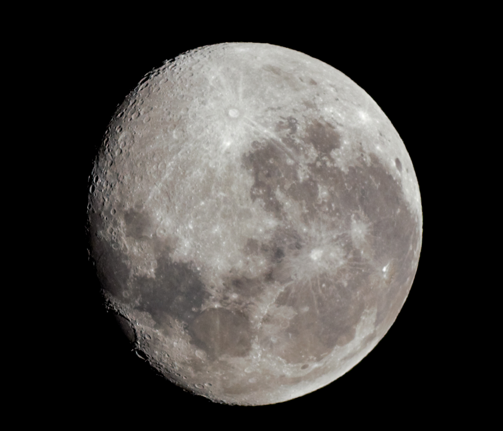
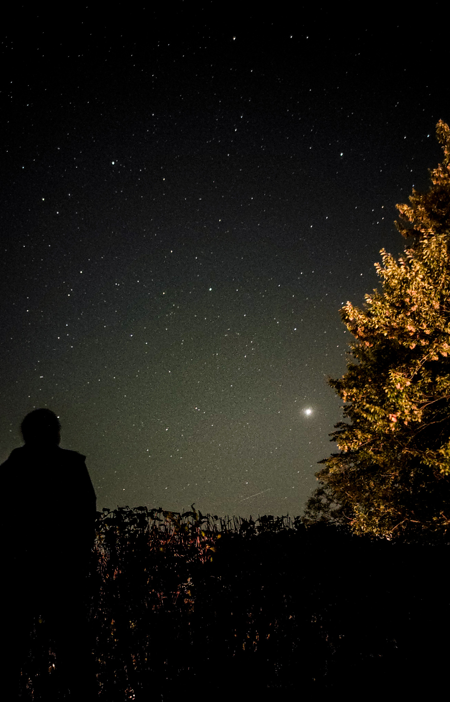

Weather forecast, moon phase and sky configuration in real time for São Paulo - Brazil
Observatory: Barra Funda, São Paulo, Brazil.
The following box provides much more weather parameters together with the estimated sky quality of the site. Even more details can be accessed by clicking on the box, which provides, among other things, the sky brightness of the Bortle scale. The lower the value on the Bortle scale, the better the quality of the sky. Values range between 1 and 9. For instance, São Paulo, Brazil, is a Class 9. My hometown, Ituiutaba, Brazil, is a Class 5. For more information about the quality of the sky, seen in a very didactic way for the entire planet, visit here!

I opted for redundancy in the weather forecast for two reasons: i) to guarantee two different data sources and ii) because the first box has the real-time value of meteorological parameters, in a more intuitive way than the second (which is more complete). So, in my opinion, the two tools complement each other very well.
Moon phase:
If you want to choose another location and/or time, you can adjust them by clicking on the grey text below.
Fight light pollution!
 Carina Nebula photographed by me in Ituiutaba, Brazil, Feb 09, 2021. Equipment: Skywatcher evostar72ED, Canon 600D, Skywatcher Star Adventurer mount. Software: Deep Sky Stacker (DSS) DSS, Adobe Lighroom CC.
Carina Nebula photographed by me in Ituiutaba, Brazil, Feb 09, 2021. Equipment: Skywatcher evostar72ED, Canon 600D, Skywatcher Star Adventurer mount. Software: Deep Sky Stacker (DSS) DSS, Adobe Lighroom CC.
 Milkway as seen from the Brazilian country side!
 Total phase of the lunar eclipse of May 15-16, 2022. The moon was photographed by me in São Paulo, Brazil, May 16, 2022. Equipment: Skywatcher evostar72ED, Canon 600D, Skywatcher Star Adventurer mount. Software: Adobe Lighroom CC. It was a big surprise to have been able to capture background stars, since São Paulo is a capital that suffers from strong light pollution.
 Photo taken in Socorro-SP. Lunar cinerea light.
 Almost full moon!
 The lovely German sky, where the brightest 'star' is the planet Jupiter. I'm in the background, enjoying this nice view! Miss you, Germany!